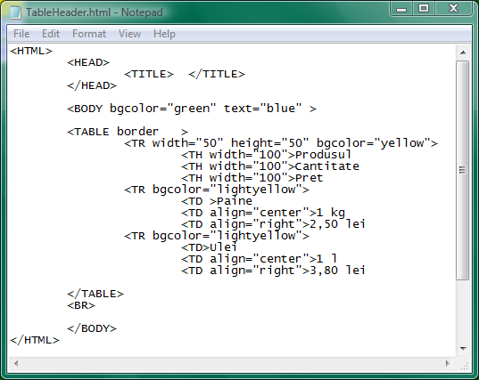

Cap de tabel. Eticheta TH
Primul rand al tabelului poate fi declarat cap de tabel daca in locul etichetei TD, pentru primul rand,
se va utiliza eticheta TH (Table Header). Atributele acestei etichete sunt aceleasi cu cele ale etichetei
TD, deci nu necesita o tratare separata. Iata un simplu exemplu de tabel al carui prim rand a fost
declarat cap de tabel si pentru care s-au folosit setari diferite de restul randurilor cu ajutorul
atributelor:
(click pe cod pentru a deschide pagina web)

Inapoi la Tabele...